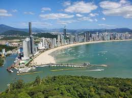
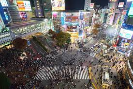
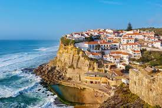
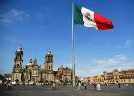

Cinco lugares para visitar!
1-Balneário Camboriú
2-Tóquio
Tóquio, a movimentada capital do Japão, combina o estilo ultramoderno com o tradicional, desde arranha-céus iluminados por neon a templos históricos. O opulento
santuário xintoísta Meiji é conhecido por seu altíssimo portão e pelas florestas circundantes. O Palácio Imperial fica localizado em meio a jardins públicos. Os
muitos museus da cidade oferecem exposições que variam de arte clássica (no Museu Nacional de Tóquio) a um teatro kabuki reconstruído (no Museu Edo-Tokyo).
3-Portugal
Portugal é um país no sul da Europa, localizado na Península Ibérica, que faz fronteira com a Espanha. Sua localização às margens do Oceano Atlântico influenciou muitos
aspectos da cultura do país: o bacalhau salgado e as sardinhas assadas são pratos típicos nacionais, as praias do Algarve são destinos muito procurados e boa parte da
arquitetura do país data dos séculos XVI a XIX, quando Portugal era um poderoso império marítimo.
4-México
O México é um país situado entre os Estados Unidos e a América Central, conhecido pelas praias no Pacífico e no Golfo do México e pela paisagem diversificada que inclui
montanhas, desertos e selvas. Ruínas antigas, como Teotihuacán e a cidade maia de Chichén Itzá, estão espalhadas pelo país, assim como cidades da era colonial espanhola.
Na capital, Cidade do México, lojas elegantes, museus renomados e restaurantes gourmet atendem às necessidades da vida moderna.
5-Paris

Paris, a capital da França, é uma importante cidade europeia e um centro mundial de arte, moda, gastronomia e cultura. Sua paisagem urbana do século XIX é cortada por avenidas
largas e pelo rio Sena. A cidade é conhecida por monumentos como a Torre Eiffel e a Catedral de Notre-Dame, uma construção gótica do século XII, sendo famosa também pela cultura
dos cafés e por lojas de estilistas famosos na Rue du Faubourg Saint-Honoré